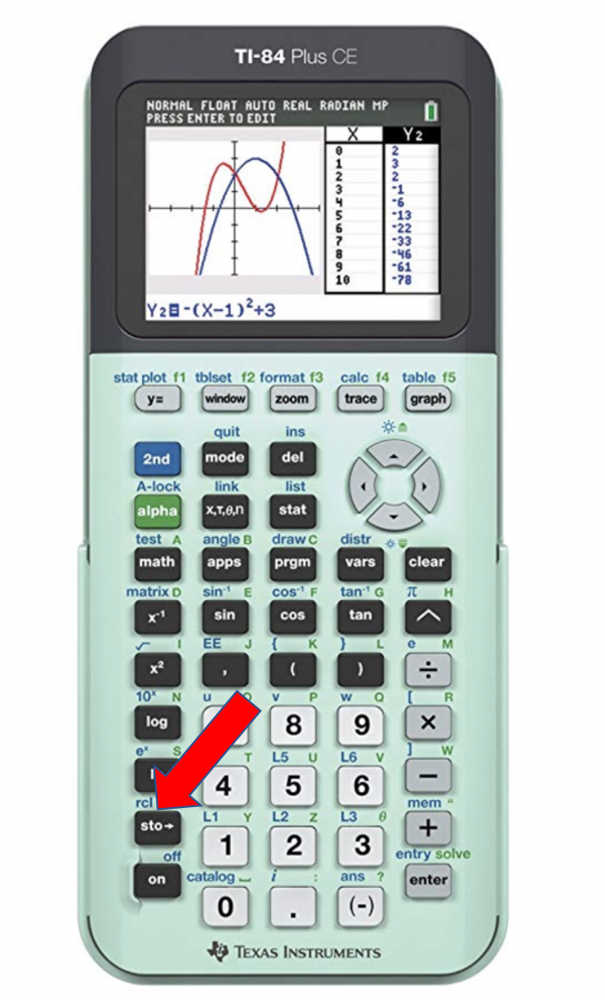
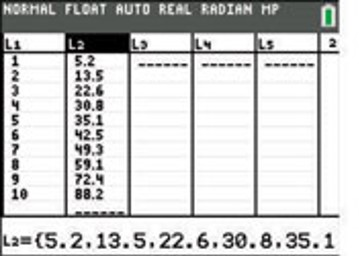
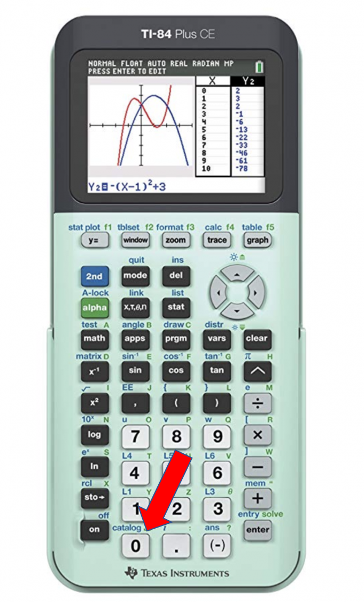

This function is used to copy paste the contents of a program into another program. This can be done by hitting the 2nd button while in a program, hitting the store button, then navigating to the program that needs to be pasted in. This is very helpful for long, repeating code but dosen't really work if the second code has prompts.
Lists are one of the most useful things in programs. They organize numbers such that they perform actions in a certain order, they can be accessed in any program, etc. To add a number to a program, just store it to the appropriate spot. The first spot in the first list would be L1(1). To add a number after all of the existing numbers in the list, the store the number in L1(dim(L1)+1). Dim is the lngth of the list, so the number is bing stored in the length, plus 1. To learn a little more about the lists, visit the Formatting page.
The catalog can be accessed by hitting the 2nd button and 0. It contains every command and can help if you can't find a specific on. Clicking the plus sign on the command will show how to format it. Click the picture to pull up an online version of the catalog that also contains descriptions of what the commands do.
